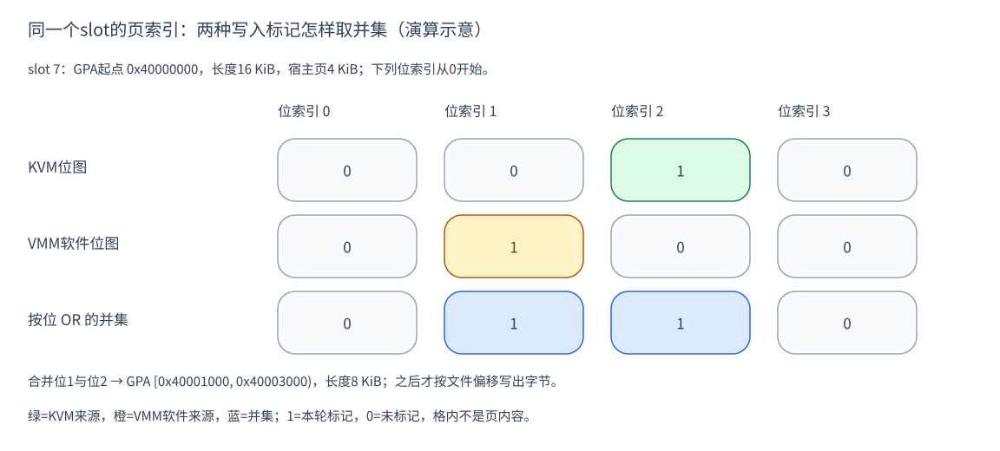

理解 KVM 内存：memory slot 怎样连接 RAM，dirty log 怎样记录变化
在本文的用户态内存模式中，VMM（虚拟机管理程序）准备宿主内存，KVM （Linux 的虚拟化内核接口）把它接入客户机物理地址空间，宿主内核的内存管理 子系统负责实际页面及映射。理解这些分工，才能继续理解内存恢复和脏页跟踪。
本文先讲地址模型和 memory slot，再讲 dirty log 的记录单位与轮次，最后 沿 CubeSandbox 的代码串起注册、访问、追踪和保存。例子只用一个 16 KiB 区域， 地址、slot 号和位图值都是示意值，不代表真实部署。
| 分析对象 | 固定版本与源码 | 用途 |
|---|---|---|
| Linux | v6.6@ffc253263a13 | 系统机制与接口 |
| CubeSandbox | v0.7.1@31d911e430fd | VMM/存储调用实例 |
这是源码解析，不是本机内核、文件系统参数或运行效果的验证。
1. KVM 内存模型：三种地址与一条范围记录
客户机地址、用户态映射和物理页各有职责
客户机中的程序使用客户机虚拟地址，客户机页表把它翻译为 GPA（客户机物理 地址）。GPA 看起来是 客户机的物理内存位置，却不是宿主机器的物理地址。运行这台 VM 的宿主仍需 确定：该位置由哪段 VMM 内存承接，最终使用哪个宿主物理页。
VMM 通过 mmap 等机制准备用户态映射，因此持有的是 HVA（宿主虚拟地址），而不是一份永远 固定的物理页清单。映射的 backing 可以是匿名内存或文件；文件页可以尚未 驻留，私有映射也可能在写入时换成匿名页。地址范围存在和物理内容就绪是 不同状态。E1、E3
KVM memory slot 就位于这两层之间：它登记一段 GPA 与一段 HVA 的对应关系。 这份范围记录提供查找依据；真正让 vCPU 访问宿主物理页，还需要 KVM MMU 和 硬件地址翻译。slot 不是客户机页表，也不是硬件二级页表本身。
slot 记录范围，不逐页保存内容
一个 slot 通常包含很多页；slot 号用来标识这条范围记录，不是页号、NUMA 节点号或磁盘卷号。它回答“在哪个范围”，具体页的查找还需要范围内偏移。
本文统一使用以下代号，后面的图和计算都沿用它们：
| 代号 | 具体含义 |
|---|---|
| GPA | 客户机物理地址；客户机页表把程序虚拟地址翻译到这里 |
| HVA | VMM 进程中的宿主虚拟地址，指向已经准备的内存映射 |
| GFN / PFN | 分别是客户机物理页号 / 宿主物理页号；它们不是同一编号 |
| slot 7 | 本例人为选择的一个内存槽，覆盖 4 个宿主页 |
| H | 本例 HVA 起点的符号，占位表示 mmap 返回的地址，不是实际日志地址 |
kvm_userspace_memory_region 用 slot 标识符、GPA 起点、长度、HVA 起点和
flags 表达这份登记。它既不装入内存字节，也不要求 VMM 提前列出所有宿主
PFN；因缺页和 CoW 改变的物理落点由后续内存管理处理。E1
2. 注册流程：把 RAM 范围交给 KVM
CubeSandbox 的 MemoryManager 遍历 RAM region，取起始 GPA、长度和
region.as_ptr()，交给 create_userspace_mapping。它分配 slot ID，
由 KVM backend 组装 kvm_userspace_memory_region，再调用
KVM_SET_USER_MEMORY_REGION 登记；成功后保存 GPA 与 slot 的对应记录。E2
设 slot 7 的 GPA 起点是 0x40000000、HVA 起点为 H、长度是 0x4000
（16 KiB），宿主页为 4 KiB。客户机访问 0x40002080 时，相对 slot 起点
偏移 0x2080，所以对应 HVA 为 H + 0x2080，位于 slot 内索引为 2 的页。
这个加法对应内核的 __gfn_to_hva_memslot：先用 GFN 减 slot 的起始 GFN，
再乘宿主页大小，加到 userspace_addr。取到页以后再使用页内偏移。
KVM API 要求同地址空间的 slot 不重叠；修改已有 slot 可改位置/标志，但不能
直接改大小；把 memory_size 设为零表示移除槽。E1
3. 访问流程：从地址关系到实际页面
slot 负责提供范围关系，稳态访存还依赖 CPU/KVM 的地址翻译机制。客户机虚拟 地址先到 GPA，再通过二级映射等机制到宿主物理内存。不能把上面的示意加法 理解成“每次 load/store 都调用 Rust 函数逐条查 slot”。
需要建立或修复映射时，KVM 用 GFN 找到对应 HVA，再通过 GUP（获取用户内存页）
得到 PFN。写缺页需要可写页时带上 FOLL_WRITE；如果 HVA 是文件私有映射，
就可能进入宿主 CoW 路径。已有可用映射和页缓存时，不必每次都从磁盘读。E3
可以把这段流程理解成“建立访问条件”和“使用已有访问条件”两个阶段。 KVM 在需要时取得页面并建立或修复映射；映射可用时，客户机的普通访存可经 硬件翻译进行。缺页、权限变化和 CoW 等情况才需要相应处理，不能把 slot 查找画成每次访存都必经的用户态调用。E3
因此，登记一个 slot 和把这段内存完整读入 RAM 是两个动作。移除 slot 也不 等于替用户态 VMM 释放 mmap；VMM 仍负责自己内存对象的生命周期。 文件恢复与私有页的完整例子见 运行时 CoW。
4. dirty log 原理：把写入记录为页集合
位图记录位置，窗口规定时间
快照程序需要知道哪些页面需要重新处理。dirty log 为 slot 中的宿主页提供 标记：一个位对应一个页，某页在该轮被标记后，再写多次也仍只占一个位。 位图表达的是位置集合，不保留每次写入的顺序、次数或旧值，也不携带页面字节。
这套机制具有时间边界：启用追踪后收集标记，读取本轮结果，再按接口协议清位 或重新建立跟踪条件。没有轮次边界，位图就无法说明“相对哪次保存发生变化”。 取到结果后，VMM 还要读取真实 RAM 并写到目标，dirty log 本身不完成快照。 E5、E6
KVM 的标记和 VMM 的软件标记属于不同记录来源。用户态设备模拟等路径可能 通过 VMM 的内存接口写入；只有走了相应软件脏标记路径，才会进入该软件位图。 因此不能仅凭 KVM 的 bitmap 就声称捕获了一切写入，也不能用进程 SoftDirty 标记替代这套接口的语义。
CubeSandbox 将候选登记与正式启用分开
在本例 backend 中，make_user_memory_region 可以提出
KVM_MEM_LOG_DIRTY_PAGES。但 create_user_memory_region 先把这些 slot
存入 dirty_log_slots，再清掉该标志完成初始注册。只有
start_dirty_log 把同一批 slot 重新带着该标志登记时，才开始跟踪。E4
这里有两个容易看混的 VMM 字段：log_dirty 参与决定哪些 RAM 注册为跟踪
候选；dirty_log 来自内存配置，控制初始化时是否启动，以及 snapshot
发送时是否优先走位图分支。配置解析的缺省值为 false；这只说明该解析入口，
不等于已核实所有部署都关闭它。
启动时 MemoryManager 还重置 VMM 软件位图。停止时 backend 去掉 slot 的 LOG_DIRTY 标志，RAM 范围继续存在；删除槽则另走 memory_size=0 的接口。 “已停止跟踪”与“VM 的 RAM 被移除”不能从同一个返回值推断。
5. 代码实例：两个来源合成一次保存集合
KVM_GET_DIRTY_LOG 返回指定 slot 的位图：bit 0 对应该 slot 的第一页。
假设客户机写过上面的 0x40002080，则本例 KVM 位图的索引2置位。
再假设 VMM 通过有软件脏标记的内存写路径改了索引1；VMM 软件位图记录它。
MemoryManager 的 send 在 dirty_log 分支先取软件位图并重置，按
GPA/长度找到 slot，再读 KVM 位图，按位 OR。图中每列都对应同一个 slot 页；
任一来源标脏，这一列就进入集合。E5

图 1：位索引从0计数，左到右为0、1、2、3；1表示本轮集合中需要处理，0表示 未由该来源标记。它不是内存内容，也不是实际采样结果。证据：E5。 绿色表示KVM来源，橙色表示VMM软件来源，蓝色表示按位OR后的集合；颜色没有 额外表达页面内容或最终快照完整性。
MemoryRangeTable::from_bitmap 将相邻的1合并：索引1和2对应 GPA
[0x40001000, 0x40003000)，长度8 KiB。再换算到输出文件偏移，才调用字节
写入函数。位图、GPA范围和文件字节是三个连续产物，不能互相代替。
这条分支先于 Full/Incremental/SoftDirty 的 match 并提前返回。启用它会改变 实际保存路径；日志窗口与目标基线怎样匹配仍需按上层流程核查，不能把开关 当成对现有 SoftDirty 流程无条件等价的替换。
6. 轮次切换、可选模式与完整性边界
由前述原理可以回答一个实际问题：读取位图后，能否直接拿它开始下一轮？ 不能只看“读”这个动作，还要看选用接口是否会清位，以及下一轮的写入跟踪 条件是否重新建立。Linux 为传统位图和手动保护等模式规定了不同协议。
Linux v6.6 的传统 GET_DIRTY_LOG 接口通常在返回前清位。通用保护实现会取出 这一轮位图、清理相应标记、要求架构层恢复跟踪条件，并在需要时刷新 TLB， 再把结果交给用户态。它要应对 vCPU 与位图读取并发，读取日志并非总是无副作用。E6
如果启用了手动 dirty-log 保护能力，GET 的清位语义不同，需要按 KVM_CLEAR_DIRTY_LOG 协议重新建立跟踪条件；dirty ring 也是另一个接口模式。 本文没有把这些可选模式当作 CubeSandbox 已启用配置，也没有断言所有架构 都靠“每次写都退出到用户态”记录脏页。
KVM 位图不包含页面字节，也不代表客户机应用事务一致性。VMM 软件写、外部 设备/DMA 是否被覆盖，仍取决于其具体路径。本文未运行 VM、并发日志轮次、 设备/DMA、64 KiB 或完整恢复验证；这些接口不能单独证明快照完整。
继续阅读：Snapshot 脏页管理、 SoftDirty 演进。
源码证据
E1 · slot ABI 与地址换算（Linux v6.6 local source fact）
slot 7、H 和地址数值为演算示例（inference），不是宿主标识。